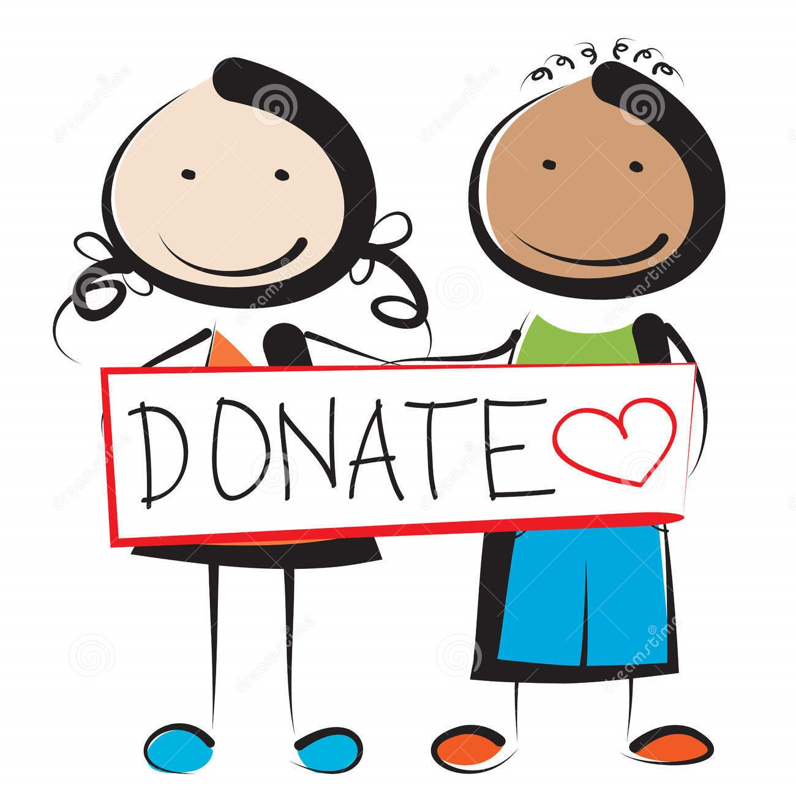

We work unitely
and raise donations for Developed World
Individuals can help the poor and needy people monetarily also. Providing financial assistance to the poor can help them solve the basic problems of living. By providing money to the poor and needy people, they can get the essentials of living.
One can get associated with charitable houses and donate money there to help the needy. By providing monetary help to the needy people. We are part of a global network of non-profit organizations leading the worldwide movement.
Learn more